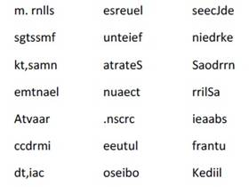
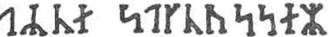
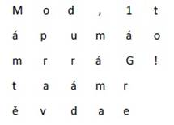

Je to opravdu runové písmo,“ řekl profesor s hrozným zamračením. „Je v tom však nějaké tajemství a já je objevím, sice.
Jeho větu zakončilo prudké gesto.
„Postav se k tabuli,“ dodal s prstem vztaženým do kouta, „a piš!“ Okamžitě jsem byl připraven.
„Nadiktuji ti teď písmena, která v naší abecedě odpovídají těmto islandským znakům. Uvidíme, co z toho vzejde. Ale střež se, při svatém Michalu, poplést to!“
Diktát začal. Držel jsem se co nejlépe. Písmena vytvořila nesrozumitelný sled těchto slov:

Když jsem dopsal, vzal mi strýc papír prudce z ruky a dlouho si jej pozorně prohlížel.
„Co to jenom znamená?“ opakoval mechanicky.
Já jsem mu to namouduši říci nemohl. On se mě ostatně vůbec neptal a pokračoval sám k sobě:
„To je to, čemu se říká kryptogram. Jeho smysl je skryt v úmyslně zpřeházených písmenech, která po patřičném srovnání vytvoří srozumitelnou větu. A pomyslím-li si, že v tomhle může být vysvětlení nebo údaj o nějakém velkém objevu…“
Já jsem si ovšem myslel, že v tom není zhola nic. Své mínění jsem si však z opatrnosti nechal pro sebe.
Profesor pak vzal knihu i pergamen, aby obojí porovnal.
„Ty dva rukopisy nejsou psány stejnou rukou,“ řekl. „Kryptogram pochází z doby pozdější než kniha. Pokládám to za věc zcela nespornou. První písmeno znamená dvojité m, které bychom v Sturlusonově knize hledali marně, protože se do islandské abecedy dostalo až ve čtrnáctém století. Od napsání knihy k záznamu na pergamen uplynulo tedy nejméně dvě stě let.“ Přiznám se, že jsem to pokládal za dost logické.
„To mě tedy přivádí k přesvědčení,“ pokračoval strýc, „že tajemný zápis napsal některý z majitelů této knihy. Ale kdo byl, k čertu, majitelem? Nepodepsal se někde v tom rukopise?“
Strýc odložil brýle, vzal silnou lupu a prohlížel pečlivě první stránky knihy.
Na druhé straně druhého listu, na patitulu knihy, objevil jakousi skvrnu, která na první pohled vypadala jako inkoustová kaňka. Když se však na ni podíval zblízka, rozpoznal v ní několik napůl vymazaných písmen. Strýc pochopil, že v tom je něco zajímavého. Jal se tedy skvrnu s lupou v ruce zkoumat, a nakonec v ní rozpoznal runové znaky, které lehce přečetl:

„Arne Saknussemm!“ zvolal vítězně. „Ale to je přece jméno, a to jméno islandské! Jméno učence ze šestnáctého století, slavného alchymisty!“ Pohlédl jsem na strýce s jistým obdivem.
„Alchymisté jako Avicenna, Bacon, Lulle a Paracelsus byli skuteční a jediní vědci své doby. Učinili objevy, kterým se právem obdivujeme. Co když ten Saknussemm skryl do tohoto nepochopitelného kryptogramu nějaký překvapivý objev? Tak tomu musí být a tak tomu určitě je!“ Profesorova představivost byla touto domněnkou vzrušena.
Odvážil jsem se odpovědět:
„Snad, ale jaký zájem mohl mít ten vědec na utajení nějakého úžasného objevu?“
Jaký zájem! Jaký zájem! Vím to snad? Nejednal snad stejně jako Galileo při objevu Saturna? Ostatně to uvidíme! Odhalím tajemství tohoto dokladu, a dokud se nu to nepodaří, nebudu jíst ani spát.“ Ach! řekl jsem si v duchu.
,,Ani ty, Axele, nebudeš jíst a spát,“ pokračoval strýc.
K Čertu! řekl jsem si, jaké štěstí, že jsem dnes obědval za dva!
„Především musíme odhalit jazyk tohoto pergamenu,“ prohlásil strýc. „To nemůže být příliš těžké.“
Při těchto slovech jsem zdvihl rychle hlavu. Strýc pokračoval ve své samomluvě:
„Není nic snadnějšího. Na pergamenu je sto dvaatřicet písmen, mezi nimiž je devětasedmdesát souhlásek a třiapadesát samohlásek. Takový poměr však mají jižní jazyky, kdežto jazyky severní jsou nepoměrně bohatší na souhlásky.
Jde tu tedy o jižní jazyk.“ Tento závěr byl velmi správný. „Ale co je to za jazyk?“ Odpověď jsem právě čekal od svého učeného strýce, v němž jsem objevil smysl pro hlubokou analýzu. „Ten Saknussemm byl vzdělaný muž,“ pokračoval strýc. „Nepsal-li svou mateřštinou, musil dát jistě přednost jazyku, který byl v šestnáctém století mezi kultivovanými národy zcela běžný. Myslím tím latinu.
Mýlím-li se, mohu to zkusit se španělštinou, s francouzštinou, s italštinou, s řečtinou a s hebrejštinou. Ale učenci šestnáctého století psali většinou latinsky.
Mám tedy právo předem tvrdit, že to je text latinský.“ Vyskočil jsem ze židle. Mé vzpomínky na latinu se bouřily proti představě, že tento sled kostrbatých slov by měl patřit ke krásné mluvě Vergiliově.
„Ano, je to latina,“ pokračoval strýc, „ale latina pokažená.“ No nazdar! pomyslel jsem si. Jestli ji spravíš, budeš chlapík, strýčku!
Prohlédněme si to dobře,“ pokračoval strýc a vzal si papír, na nějž jsem text přepsal. „Tady je řada sto dvaatřiceti zdánlivě neuspořádaných znaků. Jsou tam slova, v nichž jsou jen souhlásky, jako hned první z nich, „m.rnlls“, a hned zas jiná, kde je víc samohlásek. Například páté slovo „unteief“ nebo předposlední „oseibo“. Ale toto uspořádání nebylo určitě sestavováno jen tak. Je dáno matematicky přesně, sled těchto písmen určil neznámý klíč. Zdá se mi jisté, že původní věta byla napsána zcela normálně a pak zpřeházena podle principu, který nutno objevit. Ten, kdo najde klíč k této šifře, přečte to zcela plynule. Máš ten klíč, Axele?“
Na tuhle otázku jsem právem neodpověděl. Můj zrak padl na půvabný portrét Grety, který tu visel na zdi. Strýcova schovanka byla právě v Altoně u svých příbuzných. Musím doznat, že její nepřítomnost mě velmi rmoutila, protože hezká Greta a strýcův synovec se milovali se vší německou trpělivostí a klidem.
Zasnoubili jsme se proti vůli mého strýce, který byl příliš zaníceným geologem, než aby pochopil podobné city. Greta byla půvabná blondýnka s modrýma očima, trochu vážné povahy a trochu přísného ducha. Ale tím mě nemilovala o nic míň. A já jsem ji přímo zbožňoval, pokud tento výraz v němčině vůbec existuje.
Obraz mé malé Grety mě aspoň na chvíli přenesl ze skutečného světa do světa přeludů, do světa vzpomínek.
Viděl jsem v duchu věrnou družku svých prací a zábav. Pomáhala mi denně urovnávat vzácné strýcovy kameny. Spolu se mnou je opatřovala štítky. Kdepak, slečna Greta byla velmi zdatný mineralog! Byla by mohla poučit i nejednoho učence. Kolik kouzelných hodin jsme strávili společným studiem a kolikrát jsem záviděl bezcitným kamenům, když je brala do svých půvabných rukou!
Když pak přišla chvíle oddechu, vycházeli jsme oba ven. Pouštěli jsme se hustým stromořadím podle Alsteru a navštěvovali starý, dehtem proniklý mlýn, který se tak pěkně vyjímal na konci jezera. Cestou jsme se drželi za ruce a hovořili. Vyprávěl jsem jí historky a ona se srdečně smála, zacházeli jsme až ke břehu Labe, a když jsme pak dali dobrou noc labutím, které plavaly mezi velkými bílými lekníny, vraceli jsme se parníčkem zpět.
O tom jsem právě snil, tu však strýc náhle udeřil pěstí do stolu a vrátil mě rázem do skutečnosti.
„Hleďme!“ vykřikl. „Zdá se mi, že první myšlenka, která musí člověka napadnout, chce-li zpřeházet písmena ve větě, vede k psaní slov svisle místo vodorovně.“
Podívejme se! pomyslil jsem si.
„Uvidíme, co to udělá! Axele, napiš teď jakoukoli větu na tenhle papír, ale místo psaní písmen v řadě za sebou, piš je postupně do svislých sloupců tak, abys je řadil k sobě po pěti nebo po šesti!“ Pochopil jsem, o co mu jde, a okamžitě jsem napsal shora dolů:

„Dobrá,“ řekl profesor, aniž to četl. „Teď ta písmena přečti vodorovně!“ Poslechl jsem a dostal jsem tuto větu:
Mod,lt ápumáo mrráG! taámr ěvdae
„Výborně!“ zvolal strýc a vytrhl mi papír z ruky. „Tohle už má vzhled starého dokladu. Souhlásky i samohlásky jsou uspořádány stejně nepořádně. Dokonce je velké písmeno na konci slova a čárka uprostřed. Právě tak jako ve Saknussemmově rukopise!“
Nemohl jsem neuznat, že to je objev důmyslný.
Strýc se obrátil přímo ke mně a pokračoval:
„K přečtení věty, kterou jsi právě napsal a jejíž obsah neznám, stačí mi brát postupně z každého slova napřed první písmena, pak druhá, třetí a tak dál.“ A strýc k svému i mému velkému překvapení četl:
„Mám tě opravdu rád, má malá Greto!“
„Cože?“ zvolal strýc.
Ano, aniž jsem si to uvědomil, napsal jsem jako neopatrný zamilovaný tuto zrádnou větu.
„Ach, ty miluješ Gretu?“ pokračoval strýc vražedným hlasem.
„Ano… Ne…“ koktal jsem.
„Ach, ty miluješ Gretu!“ opakoval strýc mechanicky.
„Nuže, proveďme totéž s naším rukopisem!“
Strýc se hluboce zamyslil a na má neopatrná slova už zapomněl. Říkám neopatrná, protože učencova hlava nemohla pochopit záležitosti srdce. Naštěstí ho cele zaujala záhada dokumentu.
Ve chvíli, kdy se profesor Liddenbrock dostal k hlavnímu pokusu, zajiskřily mu za brýlemi oči, a když vzal starý pergamen do ruky, prsty se mu rozechvěly.
Byl opravdu vzrušen. Konečně silně odkašlal, vážným hlasem počal číst postupně první, druhá a další písmena každého slova a diktoval mi: mmessunkaSenrA.icefdoK.segnittamurtn
ecertserrette,rotaivsadua,ednecsedsadne
lacartniiiluJsiratracSarbmutabiledmek
meretarcsilucoYsleffenSnl
Přiznávám se, že jsem byl nakonec velmi vzrušen, ale ani takto seřazená písmena nedávala žádný smysl. Čekal jsem totiž, že z profesorových úst splynou věty v nádherné latině.
Kdo by byl mohl předvídat, že v této chvíli zahřmí silná rána do stolní desky! Inkoust vystříkl a pero mi vypadlo z ruky.
„To není ono!“ křičel strýc. „Nemá to žádný smysl!“ Pak začal jako koule létat po pracovně, vyřítil se jako lavina na schody, vrhl se do Královské třídy a tryskem zmizel.